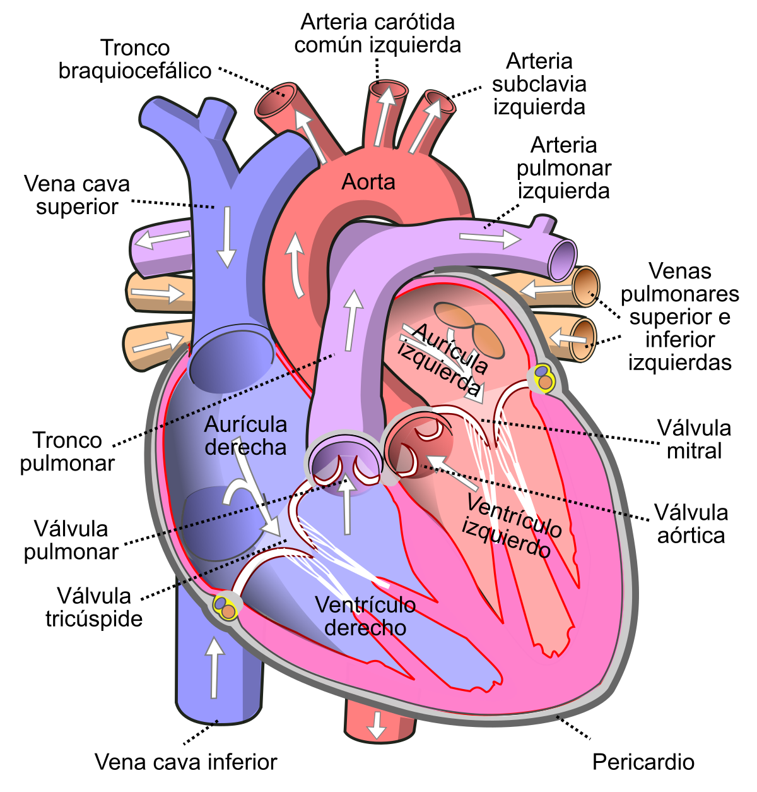
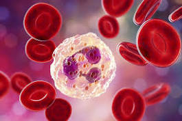

CARDIOLOGIA
A cardiologia é responsável por diagnosticar e tratar as doenças que afetam o coração e também as estruturas pertencentes ao sistema circulatório.
CIRUGIA GERAL
Cirurgia geral é a especialidade médica cuja área de atuação pode envolver diversos procedimentos diferentes em uma única cirurgia. Ela é dividida em três áreas: cirurgia abdominal, cirurgia videolaparoscópica e cirurgia do trauma.
CLINICA MEDICA
A clínica médica é uma especialidade que tem a visão global do organismo humano e por isso é capaz de realizar o diagnóstico de diferentes doenças ou mesmo encaminhar o paciente para um profissional específico para tratar a doença que ele venha a desenvolver.
CIRUGIA ONCOLÓGICA
A cirurgia oncológica é um dos tratamentos utilizados para frear o desenvolvimento do câncer ou, até mesmo, para curá-lo. Há sete tipos de cirurgia de câncer: preventiva, diagnóstica, curativa, suportiva, restauradora, paliativa e de estadiamento.
NEUROLOGIA
A neurologia estuda, diagnostica e trata doenças que comprometem o sistema nervoso (cérebro, tronco encefálico, cerebelo, medula espinhal e nervos) e os componentes da junção neuromuscular (nervo e músculos).
ORTOPEDIA
A ortopedia diagnostica, trata e acompanha lesões que afetam o sistema locomotor: deformidades, lesões e traumas dos ossos, ligamentos, músculos e articulações.
PEDIATRIA
A pediatria estuda, trata e acompanha o ser humano desde o nascimento até a adolescência, sem que exista um limite que determine a sua validez. O pediatra, inclusive, orienta as famílias sobre alimentação, aleitamento materno, vacinação e prevenção de acidentes.
UROLOGIA ONCOLÓGICA
A urologia oncológica é responsável pela prevenção, investigação, diagnóstico e tratamento dos tumores malignos do sistema genitourinário do adulto: rins, ureteres, bexiga, próstata, pênis e testículos.
RADIOLOGIA intervencionista
A radiologia intervencionista é uma especialidade que atua realizando procedimentos e intervenções cirúrgicas minimamente invasivas guiadas por imagem.
mastologia
A mastologia é responsável pela saúde das mamas: examina, diagnostica e trata dos casos relacionados às glândulas mamárias, principalmente o câncer de mama, bastante comum entre as mulheres.

hematologia
A hematologia trata das doenças relacionadas ao sangue e também dos órgãos hematopoiéticos (medula óssea, os linfonodos ou gânglios linfáticos e o baço).
GERIATRIA
Geriatria abrange os cuidados de promoção, prevenção, tratamento e reabilitação da saúde dos idosos. O especialista é responsável pelo preparo para o envelhecimento e também reabilitação e cuidados paliativos.